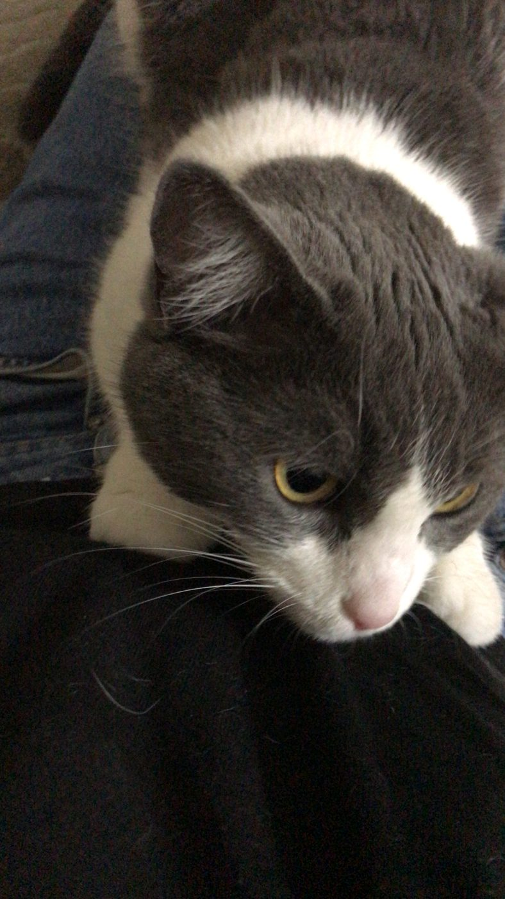
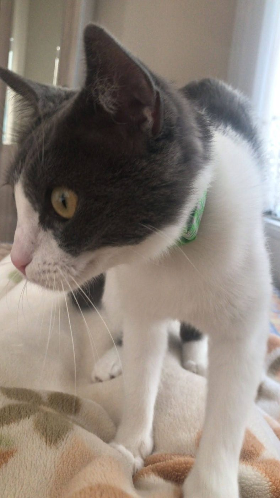

TEK GELİŞTİRİCİ
Router Murti
Fikir, tasarım, kod ve içerik bu kişisel projede tek kişiden çıkıyor.
Yönetici oturumu açık · Router Murti Limon üzerinde çalışıyor.
Bir kediden kalan büyük bir fikir
Limon’un hatırasından doğan, her oyuncunun kendi kedisiyle kuracağı sıcak bir oyun dünyası. Tasarımını, kodunu ve hikâyesini tek başıma hazırlıyorum.
Limon’a dokun; küçük bir tepki versin.
Yönetim panelinden kaydedilen
Burada yalnızca toplu çalışma ve mola süreleri görünür; kişisel oturum ayrıntıları yayımlanmaz.
Özet güvenli veri kaynağından yükleniyor.
Geliştirme günlüğüne geç ↗Kurucu destekçi programı
Destek alanı, oyunun gelişimine katkıda bulunmak isteyenler için ayrı ve görünür bir yerde. Paketler taslak; ödeme düğmesi kapalı.
Dört destek seviyesini görKasa şimdilik boş. Ödeme ve satış akışı kapalı.



İz Defteri · ayrı sayfa
Yaklaşık 1.200 fotoğraf ve video arasından seçilen hatıralar zamanla güncellenecek. Bu sayfada yalnızca küçük bir pencere var; asıl arşiv ayrı bir yerde.
Oyun planı
Limon, geliştirme yolundaki sekiz durağı geziyor. Şu anki işaret Prototip; haritada bir durağa basınca ayrıntı açılıyor.
Yol haritasını aç
Geliştirme günlüğü
Günlük ve duyurular ayrı sayfada; burada yalnızca kısa bir pencere var.
Bir kişi · tek bir proje
Bir şeyler üretmezsem yeniden depresyona girebileceğimi biliyorum. Yaratıcılığımı kullanmadığım zamanlarda alkol tüketimimin aşırı arttığını fark ediyorum.
Bilgisayarda vakit geçirmeyi seviyorum. “Bilmiyorum” kelimesinden nefret ediyorum; bilmediğim bir konu varsa kendime bir saat ayırır, araştırır, öğrenir ve denerim. Bu projeyi tek başıma, Router Murti olarak geliştiriyorum.
Fikir, tasarım, kod ve içerik bu kişisel projede tek kişiden çıkıyor.
Yasal ve açık bilgi
Proje belgeleri, gizlilik taslağı ve ilerideki yasal evraklar tek yerde toplanacak.
Bilgi rafına göz at